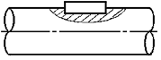
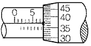
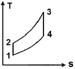
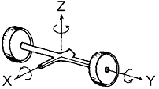
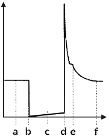
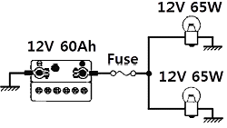
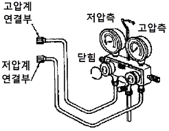
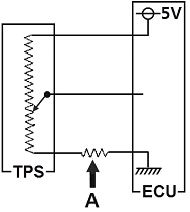

자동차정비기사 (2014-03-02 기출문제)
1과목: 일반기계공학
1. 주철에 관한 설명으로 옳지 않은 것은?
- 주철은 인장강도보다 압축강도가 크다.
- 표면을 백선화한 주철을 칠드주철이라고 한다.
- 합금주철을 열처리하여 단조한 주철을 가단주철이라 한다.
- 구상흑연주철을 노듈러주철 또는 덕타일주철이라고 한다.
(정답률: 63%)

2. 주조품을 제조하기 위한 모형(pattern) 중 코어 모형을 사용해야 하는 주물로 적합한 것은?
- 크기가 큰 주물
- 크기가 작은 주물
- 외형이 복잡한 주물
- 내부에 구멍(hollow)이 있는 주물
(정답률: 80%)
3. 연강재료에서 일반적으로 극한강도, 사용응력, 항복점, 탄성한도, 허용응력에 관한 크기 관계를 가장 적절히 표현한 것은?
- 극한강도 ＞ 사용응력 ＞ 항복점
- 항복점 ＞ 허용응력 ＞ 사용응력
- 사용응력 ＞ 항복점 ＞ 탄성한도
- 극한강도 ＞ 사용응력 ＞ 허용응력
(정답률: 70%)
4. 일반적으로 선반으로 가공할 수 없는 것은?
- 나사 절삭
- 축 외경 절삭
- 기어 이 절삭
- 축 테이퍼 절삭
(정답률: 60%)
5. 그림과 같이 축과 보스에 모두 키 홈을 가공하는 키의 명칭으로 가장 적합한 것은?

- 안장키
- 납작키
- 반달키
- 묻힘키
(정답률: 70%)
6. 원추 접촉면의 평균지름이 500㎜, 마찰면의 폭이 40㎜, 원추 접촉면 허용압력이 0.8N/cm2 , 회전수는 1000rpm이고, 접촉면의 마찰계수가 0.3인 원추 클러치의 전달동력은 약 몇 kW인가?
- 3.95
- 4.41
- 5.98
- 7.22
(정답률: 19%)
7. 그림에서 마이크로미터 딤블의 눈금선과 눈금선의 간격이 0.01㎜일 때 “x"부분이 일치하였다면 측정값은 몇 ㎜인가?

- 7.37
- 7.87
- 17.37
- 17.87
(정답률: 66%)
8. Ｉ형 보의 관성모멘트 250㎝4, 단면의 높이 20㎝, 굽힘모멘트가 250N·m일 때 최대굽힘응력은 몇 N/cm2인가?
- 250
- 500
- 1000
- 2000
(정답률: 45%)
9. 보스에 홈을 판 후 키를 박아 마찰력을 이용하여 동력을 전달하는 키로서 큰 힘을 전달하는데 부적당한 것은?
- 평키
- 반달키
- 안장키
- 둥근 열쇠
(정답률: 61%)
10. 해수에 대해서는 백금과 같이 내식성이 우수하고, 특히 염산, 황산, 초산에 대한 저항이 크며, 비중은 약 4.51로 가벼우나 비강도는 금속 중에 가장 큰 금속은?
- Al
- Ni
- Zn
- Ti
(정답률: 70%)
11. 어느 한쪽 방향으로만 공기의 흐름이 이루어지며 반대쪽의 압력 흐름을 저지시키는 역할을 하는 밸브에 속하지 않는 것은?
- 감압밸브(regulator)
- 체크밸브(check valve)
- 셔틀밸브(shuttle valve)
- 속도조절밸브(speed control valve)
(정답률: 48%)
12. 넓은 유로에서 단면이 좁은 곳으로 유입되는 유체가 압력의 저하로 인해 공기, 수증기 등의 가스가 물에서 분리되어 기포가 되면서 진동과 소음의 원인되는 현상은?
- 분리현상
- 재생현상
- 수격현상
- 공동현상
(정답률: 74%)
13. 지름이 10㎝인 축에 6MPa의 최대 전단응력이 발생했을 때 비틀림모멘트는 약 몇 N·m인가?
- 589
- 1178
- 1767
- 6280
(정답률: 48%)
14. 다음 재료 중 소성가공(塑性加工)이 가장 어려운 것은?
- 주철
- 저탄소강
- 구리
- 알루미늄
(정답률: 63%)
15. 스프링 백(spring back)의 양을 결정하는 사항으로 옳지 않은 것은?
- 경도와 탄성이 높은 재료일수록 크다.
- 구부림 반지름이 같을 때 두께가 두꺼울수록 크다.
- 같은 두께의 판재에서는 구부림 각도가 작을수록 크다.
- 같은 두께의 판재에서는 반지름이 클수록 크다.
(정답률: 48%)
16. 직류 아크 용접기에서 용접봉에 음(-)을 연결하고 모재에 양(＋)극을 연결한 경우의 극성으로 올바른 명칭은?
- 정극성(DCSP)
- 역극성(DCRP)
- 음극성(FCSP)
- 양극성(MCSP)
(정답률: 57%)
17. 기계설계와 관련된 안전율에 대한 설명으로 옳지 않은 것은?
- 항상 1 보다 커야 한다.
- 안전율이 너무 작으면 구조물의 재료가 낭비된다.
- 기준강도(극한응력 등)를 허용응력으로 나눈 값이다.
- 안전율을 결정할 때는 공학적으로 합리적인 판단을 요한다.
(정답률: 72%)
18. 다음 중 축의 위험속도와 가장 관련이 깊은 것은?
- 축의 고유진동수
- 축에 작용하는 굽힘모멘트
- 축에 작용하는 비틀림모멘트
- 축에 동시에 작용하는 비틀림과 압축하중
(정답률: 64%)
19. 원심펌프로 양수하고 있는 어떤 송출량에서 송출측 압력계의 압력이 0.25MPa, 흡입측 진공계는 320mmHg이었다. 흡입관과 송출관의 내경은 같고, 압력계와 진공계의 수직거리가 340㎜일 때의 양정은약 몇 m인가?
- 30.2
- 39.5
- 59.2
- 79.0
(정답률: 26%)
20. 강의 열처리에서 가공으로 생긴 섬유조직과 내부응력을 제거하며 연화시키기 위하여 오스테나이트 범위로 가열한 후 서냉하는 풀림의 방법은 무엇인가?
- 저온풀림
- 고온풀림
- 완전풀림
- 구상화풀림
(정답률: 56%)
2과목: 기계열역학
21. 저온실로부터 46.4kW의 열을 흡수할 때 10kW의 동력을 필요로 하는 냉동기가 있다면, 이 냉동기의 성능계수는?
- 4.64
- 5.65
- 56.5
- 46.4
(정답률: 80%)
22. 교축과정(throttling process)에서 처음 상태와 최종 상태의 엔탈피는 어떻게 되는가?
- 처음 상태가 크다.
- 최종 상태가 크다.
- 같다.
- 경우에 따라 다르다.
(정답률: 55%)
23. 500W의 전열기로 4kg의 물을 20℃에서 90℃까지 가열하는데 몇 분이 소요되는가? (단, 전열기에서 열은 전부 온도 상승에 사용되고 물의 비열은 4180 J/kg·K이다.)
- 16
- 27
- 39
- 45
(정답률: 39%)
24. 두께 10㎜, 열전도율 15 W/m·℃인 금속판의 두 면의 온도가 각각 70℃와 50℃ 일 때 전열면 1m2 당 1분 동안 전달되는 열량은 몇 kJ인가?
- 1800
- 14000
- 92000
- 162000
(정답률: 59%)
25. 냉매 R-134a를 사용하는 증기-압축 냉동사이클에서 냉매의 엔트로피가 감소하는 구간은 어디인가?
- 증발구간
- 압축구간
- 팽창구간
- 응축구간
(정답률: 52%)
26. 절대온도 T1 및 T2의 두 물체가 있다. T1에서 T2로 열량 Q가 이동할 때 이 두 물체가 이루는 계의 엔트로피 변화를 나타내는 식은? (단, T1＞T2이다.)
- (T1－T2)/Q(T1×T2)
- Q(T1＋T2)/(T1×T2)
- Q(T1－T2)/(T1×T2)
- (T1＋T2)/Q(T1×T2)
(정답률: 62%)
27. 카르노 열기관에서 열공급은 다음 중 어느 가역과정에서 이루어지는가?
- 등온팽창
- 등온압축
- 단열팽창
- 단열압축
(정답률: 56%)
28. 밀폐된 실린더 내의 기체를 피스톤으로 압축하는 동안 300kJ의 열이 방출되었다. 압축일의 양이 400kJ이라면 내부에너지 증가는?
- 100kJ
- 300kJ
- 400kJ
- 700kJ
(정답률: 69%)
29. 어떤 시스템이 100kJ의 열을 받고, 150kJ의 일을 하였다면 이 시스템의 엔트로피는?
- 증가했다.
- 감소했다.
- 변하지 않았다.
- 시스템의 온도에 따라 증가할 수도 있고 감소할 수도 있다.
(정답률: 52%)
30. 1kg의 공기를 압력 2MPa, 온도 20℃의 상태로부터 4MPa, 온도 100℃의 상태로 변화하였다면 최종체적은 초기체적의 약 몇 배인가?
- 0.125
- 0.637
- 3.86
- 5.25
(정답률: 50%)
31. 서로 같은 단위를 사용할 수 없는 것으로 나타낸 것은?
- 열과 일
- 비내부에너지와 비엔탈피
- 비엔탈피와 비엔트로피
- 비열과 비엔트로피
(정답률: 66%)
32. 질량(質量) 50kg인 계(系)의 내부에너지(u)가 100kJ/kg이며, 계의 속도는 100m/s이고, 중력장(重力場)의 기준면으로부터 50m의 위치에 있다고 할 때, 계에 저장된 에너지(E)는?
- 3254.2kJ
- 4827.7kJ
- 5274.5kJ
- 6251.4kJ
(정답률: 48%)
33. 온도가 -23℃인 냉동실로부터 기온이 27℃인 대기 중으로 열을 뽑아내는 가역냉동기가 있다. 이 냉동기의 성능계수는?
- 3
- 4
- 5
- 6
(정답률: 44%)
34. 온도 300K, 압력 100kPa 상태의 공기 0.2kg이 완전히 단열된 강체 용기 안에 있다. 패들(paddle)에 의하여 외부에서 공기에 5kJ의 일이 행해진다. 최종 온도는 얼마인가? (단, 공기의 정압비열과 정적비열은 1.0035kJ/kg·K, 0.7165kJ/kg·K이다.)
- 약 325K
- 약 275K
- 약 335K
- 약 265K
(정답률: 46%)
35. 공기 1kg를 1MPa, 250℃의 상태로부터 압력 0.2MPa까지 등온변화한 경우 외부에 대하여 한 일량은 약 몇 kJ인가? (단, 공기의 기체상수는 0.287kJ/kg·K이다.)
- 157
- 242
- 313
- 465
(정답률: 49%)
36. 다음 중 열전달률을 증가시키는 방법이 아닌 것은?
- 2중 유리창을 설치한다.
- 엔진실린더의 표면 면적을 증가시킨다.
- 팬의 풍량을 증가시킨다.
- 냉각수 펌프의 유량을 증가시킨다.
(정답률: 72%)
37. 이상기체의 마찰이 없는 정압과정에서 열량 Q는? (단, Cv는 정적비열, Cp는 정압비열, k는 비열비, dT는 임의의 점의 온도변화이다.)
- Q = CvdT
- Q= K2CvdT
- Q = CpdT
- Q = kCpdT
(정답률: 55%)
38. 공기는 압력이 일정할 때 그 정압비열이 Cp=1.0⑤3＋0.000079t kJ/kg·℃라고 하면 공기 5kg을 0℃에서 100℃까지 일정한 압력하에서 가열하는데 필요한 열량은약 얼마인가? (단, t=℃이다.)
- 100.5kJ
- 100.9kJ
- 502.7kJ
- 504.6kJ
(정답률: 41%)
39. 그림과 같은 공기표준 브레이튼(Brayton) 사이클에서 작동유체 1kg당 터빈 일은 얼마인가? (단, T1=300K, T2=475.1K, T3=1100K, T4=694.5K 이고, 공기의 정압비열과 정적비열은 각각 1.0035kJ/kg·K, 0.7165kJ/kg·K이다.)

- 406.9kJ/kg
- 290.6kJ/kg
- 627.2kJ/kg
- 448.3kJ/kg
(정답률: 66%)
40. 준평형 과정으로 실린더 안의 공기를 100kPa, 300K 상태에서 400kPa까지 압축하는 과정 동안 압력과 체적의 관계는? (단, PVⁿ=일정(n=1.3)"이며, 공기의 정적비열은 Cv=0.717kJ/kg·K, 기체상수(R)=0.287kJ/kg·K이다.)
- 일 = -108.2kJ/kg, 열 = -27.11kJ/kg
- 일 = -108.2kJ/kg, 열 = -189.3kJ/kg
- 일 = -125.4kJ/kg, 열 = -27.11kJ/kg
- 일 = -125.4kJ/kg, 열 = -189.3kJ/kg
(정답률: 46%)
3과목: 자동차기관
41. 자동차용 고속 디젤기관에 대한 설명으로 틀린 것은?
- 압축비는 약 10∼12 : 1 정도이다.
- 압축압력은 약 20∼60bar 정도이다.
- 폭발최고압력은 약 50∼180bar 정도이다.
- 전 부하시 배기가스온도는 약 550∼750℃ 정도이다.
(정답률: 70%)
42. 기관의 윤활장치에서 유압 조절밸브의 바이패스 밸브가 열리는 시기로 틀린 것은?
- 기관 회전 속도가 높을 때
- 윤활 회로의 일부가 막혔을 때
- 기관 오일 점도가 과대할 때
- 오일 스트레이너가 막혔을 때
(정답률: 57%)
43. 엔진의 흡기장치에 대한 설명으로 틀린 것은?
- 고속 고성능용은 흡기저항이 큰 것이 바람직하다.
- 혼합기에 와류를 주어 연소 속도를 빠르게 한다.
- 흡기계통은 균일한 분배성과 응답성이 우수해야 한다.
- 흡기계통은 안정된 운전성이 얻어질 수 있어야 한다.
(정답률: 94%)
44. 디젤기관에서 예연소실식의 특징으로 가장 적합한 것은?
- 연소실 모양이 간단하다.
- 시동 시 예열이 필요 없다.
- 출력이 큰 엔진에 적합하다.
- 공기와 잘 혼합되므로 완전연소가 가능하다.
(정답률: 52%)
45. 표준대기압 하에서 행정체적 Vh=2000cm3, 공연비 Ma=15:1, 4행정 사이클 기관에서 압축비 ε=11일 때 이론 일은? (단, 연료 저발열량 Hʟ=42.7MJ/kg, 비열비 k=1.4, 공기밀도 ρ=1.29kg/m3)
- 약 6.84kJ
- 약 5.84kJ
- 약 5.53kJ
- 약 4.53kJ
(정답률: 19%)
46. 자동차 기관의 출력 산출방법으로 실린더 내경과 기통 수만 알면 산출되는 마력은?
- 지시마력
- SAE 마력
- 제동마력
- 연료마력
(정답률: 81%)
47. LPG 기관(믹서타입)의 연료장치 구성 부품에 관한 설명으로 틀린 것은?
- 베이퍼라이저는 LPG를 감압시킨 후 기화시켜 믹서에 공급한다.
- 봄베(bombe)는 LPG 충전을 위한 고압 용기이며 85%이하로 연료를 충전시킨다.
- 냉각수 온도가 낮아 베이퍼라이저에서 기화성이 떨어지면 액상 솔레노이드가 작동하도록 ECU가 제어한다.
- 믹서는 기화된 연료를 공기와 혼합하여 최적의 혼합비를 연소실에 공급한다.
(정답률: 76%)
48. 전자제어 가솔린 기관에서 증발가스 제어 사항으로 옳은 것은?
- 증발가스는 연료탱크 등에서 주로 발생하며 주성분은 탄화수소(HC)이다.
- 연료탱크 내 온도가 상승되면 증발 가스량이 줄어 캐니스터의 용량을 크게 해야 된다.
- 캐니스터 내의 응집된 연료는 엔진 시동 시배기다기관을 통해 연소된다.
- 증발가스 제어는 EGR 밸브에 의해 조절되고 엔진이 정상온도가 되면 밸브를 개방한다.
(정답률: 77%)
49. 기관의 축 토크를 T[kgf·m], 총 감속비를 i, 동력 전달 효율을 ηt, 구동바퀴의 동하중 반지름을 r[m]이라 할 때 자동차를 추진하는데 필요한 구동력 F[kgf]를 구하는 식은?
- F = Tiηt / r
- F = Tηt / ir
- F = 2iηtT / r2
- F = Tir / ηt
(정답률: 56%)
50. 산소센서 신호를 기준으로 피드백 작용을 하지 않는 개회로 상태와 거리가 먼 것은?
- 시동 시
- 열간 시
- 가속 시
- 냉간 시
(정답률: 79%)
51. 공기 과잉율에 대한 설명으로 틀린 것은?
- 연소에 필요한 이론적 공기량에 대한 공급된 공기량과의 비를 말한다.
- 공기 과잉율이 1일 때 이론 공연비이다.
- 공기 과잉율이 1에 가까울수록 출력은 감소하며 백색 연기를 배출하게 된다.
- 기관에서는 전 부하(최대분사량)일 때 공기 과잉율이 1보다 작다.
(정답률: 84%)
52. 바닥의 면적이 1m2인 연료탱크 안에 비중 0.8인 연료가 3m3 들어 있다면 밑바닥에서의 압력은?
- 0.24kgf/cm2
- 2.4kgf/cm2
- 24kgf/cm2
- 240kgf/cm2
(정답률: 45%)
53. 전자제어 가솔린기관에서 공회전 상태가 불량하여 인젝터 커넥터를 차례로 분리시켰을 때 기관의 회전수가 변화하지 않는 실린더가 있다면 그 원인이 아닌 것은?
- 인젝터 커넥터의 불량
- 점화플러그의 불량
- 압축압력의 불량
- 수온센서의 작동 불량
(정답률: 75%)
54. 전자제어 가솔린 기관의 흡입공기량 계측 방식 중 질량 유량을 직접 검출하는 것은?
- 메저링 플레이트식(Measuring Plate Type)
- 핫 필름식(Hot Film Type)
- 칼만 와류식(Karman Vortex Type)
- 흡기 압력 검출 방식(Speed Density Type)
(정답률: 73%)
55. 전자제어 기관에서 공전속도를 제어하는 부품으로 틀린 것은?
- ISC 액추에이터
- 가변흡기밸브 액추에이터
- 에어 바이패스 솔레노이드 밸브
- 스탭모터
(정답률: 64%)
56. 커먼레일 디젤기관에서 엔진의 출력상승과 직접 관계되는 분사 단계는?
- 예비 분사(pilot injection)
- 주 분사(main injection)
- 후 분사(post injection)
- 유닛 분사(unit injection)
(정답률: 80%)
57. 가솔린기관의 행정이 150㎜, 피스톤 평균속도가 6m/s일 때 크랭크축의 회전수는?
- 800rpm
- 1000rpm
- 1200rpm
- 1400rpm
(정답률: 60%)
58. 전자제어 엔진의 연료계통에서 엔진 정지 후 연료의 잔압이 유지되지 않는 원인으로 틀린 것은?
- 연료펌프의 릴리프 밸브가 고착되었다.
- 인젝터 내의 니들밸브 리턴스프링이 이완되었다.
- 연료 공급라인의 파이프가 누설되었다.
- 연료펌프 출구측의 체결부가 이완되었다.
(정답률: 67%)
59. 전자제어 가솔린 기관에서 연료펌프 내에 체크밸브를 두는 가장 중요한 이유는?
- 재 시동성을 향상시키기 위하여
- 가속성을 향상시키기 위하여
- 연비를 좋게 하기 위하여
- 연료펌프 작동에 있어서 저항을 적게 받기 위하여
(정답률: 75%)
60. 전자제어 기솔린기관에서 컨트롤 유닛(ECU)의 입력 센서 중 전원을 필요로 하지 않는 센서는?
- 맵센서
- 스로틀 포지션 센서
- 홀소자 방식의 캠축 위치 센서
- 마그네틱 방식의 크랭크각 센서
(정답률: 60%)
4과목: 자동차새시
61. 자동변속기 차량에서 스톨테스트(stall test)를 하는 목적은?
- 토크컨버터 및 각종 클러치, 엔진의 성능을 점검하기 위하여
- 주행 중 클러치 및 유성기어 상태를 점검하기 위하여
- 출발시의 토크비를 점검하기 위하여
- 펌프가 엔진에 전달하는 회전력을 점검하기 위하여
(정답률: 75%)
62. 수동변속기 차량에서 클러치 페달의 자유간극이 작아지는 원인은?
- 클러치 디스크의 페이싱 마모
- 클러치 압력판의 스프링 장력 약화
- 유압 브레이크 계통에 공기 혼입
- 클러치 마스터 실린더의 리턴 불량
(정답률: 56%)
63. 동력전달 계통에서 차동 장치(differential gear)에 관련된 내용으로 틀린 것은?
- 차동장치의 형식은 웜과 웜기어 방식과 볼 엔드 조인트 방식으로 되어 있다.
- 요철이 심한 노면을 주행할 때 회전속도를 차동 한다.
- 구동토크의 크기는 노면과의 점착력이 작은 쪽의 구동팬에 의해서 결정된다.
- 선회할 때 좌우 구동륜 간의 회전속도를 다르게 제어한다.
(정답률: 61%)
64. 거친 노면을 주행할 때 타이어가 노면이나 자갈 등을 치는 소리로 차량의 현가장치나 차체를 통하여 차내에 전달되는 소음으로 옳은 것은?
- 럼블(rumble) 소음
- 험(hum) 소음
- 스퀄(squeal) 소음
- 패턴(pattern) 소음
(정답률: 47%)
65. 동력 조향장치에서 전동 모터(MDPS)식 종류가 아닌 것은?
- 칼럼 어시스트식
- 피니언 어시스트식
- 랙 어시스트식
- 조향 휠 어시스트식
(정답률: 56%)
66. 전자제어 현가장치에서 앤티 다이브 제어에 필요한 입력 요소로 옳은 것은?
- 차고 센서, G-센서
- 스로틀 포지션센서, 차속센서
- G-센서, 브레이크 스위치
- 차속센서, 브레이크 스위치
(정답률: 63%)
67. 전자제어 제동장치(ABS)에서 셀렉트-로(select-low) 제어에 대한 설명으로 옳은 것은?
- 제동시키려는 바퀴만 골라서 제어한다.
- 제동력을 독립적으로 제어한다.
- 좌·우 차륜의 회전속도를 비교하여 먼저 슬립되는 바퀴를 기준으로 제어한다.
- 전륜의 속도 불균형을 빠르게 분배하여 제어한다.
(정답률: 86%)
68. 스프링 아래진량 진동에서 X축을 중심으로 회전운동을 하는 고유 진동은?

- 휠 트램프(wheel tramp)
- 와인드업(wind up)
- 상하진동(wheel hop)
- 평행진동(parallel hop)
(정답률: 70%)
69. 공기식 브레이크 장치의 장점이 아닌 것은?
- 동력 피스톤의 지름을 작게 하여도 큰 제동력을 얻을 수 있다.
- 차량 중량에 제한을 받지 않는다.
- 베이퍼록 발생 염려가 없다.
- 공기 압축기에 의한 엔진의 동력 손실은 없다.
(정답률: 62%)
70. 후륜구동 방식의 차량에서 엔진회전토크가 30kgf·m, 추진축의 회전수가 400rpm, 제1속의 변속비 6, 최종감속비는 6.5일 때 후차축에 전달되는 회전토크는? (단, 기계손실은 무시한다.)
- 1170kgf·m
- 1280kgf·m
- 1360kgf·m
- 1420kgf·m
(정답률: 40%)
71. 휠 림의 규격이 4½×13엣 4½×14로 바뀌었을 때 달라진 것은?
- 휠 림의 플랜지(flange) 형상
- 휠 림의 폭(width)
- 휠 림의 진격(diameter)
- 휠 림의 험프(hump) 형상
(정답률: 62%)
72. 전자제어 제동장치에서 EBD(electronic brake force distribution)의 기능은?
- 급제동시 앞바퀴의 조기 로크를 방지해 준다.
- 급제동시 뒷바퀴의 조기 로크를 방지해 준다.
- 급제동시 뒷바퀴의 유압을 증가시켜 준다.
- 급제동시 앞·뒷바퀴 모두 유압을 증가시켜 준다.
(정답률: 81%)
73. 조향장치에서 조향 기어의 분류 방식이 아닌 것은?
- 가역식
- 비가역식
- 반가역식
- 전부동식
(정답률: 66%)
74. 자동변속기에 적용된 토크 컨버터 내부 작동에서 펌프와 터빈의 회전수가 같아질 때는?
- 컨트롤 레버가 중립일 때
- D레인지에서 출발할 때
- R레인지에서 출발할 때
- 댐퍼 클러치가 작동할 때
(정답률: 81%)
75. 유압식 동력조향 장치에서 작동점검 항목으로 거리가 먼 것은?
- 피니언의 프리로드 점검
- 스트러트 인슐레이터 점검
- 조향핸들의 작동력 점검
- 오일펌프의 압력 점검
(정답률: 71%)
76. 유압식 제동장치에서 제동력을 발생시키는 유압의 원리는?
- 베르누이 원리
- 쿨롱의 원리
- 에커먼 장토 원리
- 파스칼 원리
(정답률: 85%)
77. 자동변속기 내부구조에서 주로 사용되는 일방향 클러치의 종류가 아닌 것은?
- 스프래그 형
- 래칫 형
- 롤러 테이퍼 형
- 다판 클러치 형
(정답률: 47%)
78. 마찰 클러치 디스크의 지름이 50cm, 전달 토크가 100N·m일 때 디스크를 누르는 클러치 스프링 한 개당 힘은? (단, 마찰계수:0.3, 클러치 스프링:6개)
- 약 1333N
- 약 660N
- 약 111N
- 약 222N
(정답률: 43%)
79. 자동차의 구동력에 대한 설명 중 틀린 것은?
- 구동력은 엔진의 회전력에 비례한다.
- 구동력은 총 감속비에 반비례한다.
- 구동력은 구동바퀴의 반경에 반비례한다.
- 구동력이 크면 등판능력도 좋다.
(정답률: 59%)
80. 자재이음 중 등속 조인트(CV joint)의 종류가 아닌 것은?
- 트랙터형
- 벤딕스형
- 제파형
- 플렉시블형
(정답률: 61%)
5과목: 자동차전기
81. 기동 전동기가 정상적으로 회전하지만 기관이 시동되지 않는 원인으로 틀린 것은?
- 연료펌프의 이상
- 피니언 기어의 적은 백래시
- 기관의 압축압력 부족
- 부적절한 밸브 타이밍
(정답률: 73%)
82. 감광식 룸 램프 제어에 대한 설명 중 틀린 것은?
- 도어를 연 후 닫을 때 실내등이 즉시 소동되지 않고 서서히 소등될 수 있도록 한다.
- 시동 및 출발 준비를 할 수 있도록 편의를 제공하는 기능이다.
- 모든 신호는 엔진 컴퓨터로 입력된다.
- 입력요소는 모든 도어 스위치이다.
(정답률: 67%)
83. 엔진 컴퓨터(ECU)의 입력 요소 신호가 아닌 것은?
- 시동(크랭킹)
- EGR밸브
- 공회전 스위치
- 냉각수 온도
(정답률: 70%)
84. 기동전동기의 성능에 대한 설명으로 틀린 것은?
- 축전지 용량이 적어지면 전동기의 출력은 감소된다.
- 같은 용량의 축전지라 하더라도 기온이 낮으면 전동기의 출력은 감소된다.
- 엔진 오일의 점도가 높으면 요구되는 구동 토크도 증가된다.
- 기관의 온도가 낮을 경우 시동 전동기에는 작은 부하가 걸리게 된다.
(정답률: 56%)
85. 그림과 같은 인젝터 파형에서 인젝터 작동시간은?

- a ∼ b
- b ∼ d
- c ∼ f
- d ∼ f
(정답률: 83%)
86. 전조등의 전구 표면을 맨손으로 만지거나 표면에 이물질이 묻어 있으면 전구가 파손되기 쉬운 원인으로 옳은 것은?
- 유리의 진동저항성이 작기 때문이다.
- 유리표면 열팽창계수의 차이가 생기기 때문이다.
- 유리의 표면이 매끈하기 때문이다.
- 유리가 투명하기 때문이다.
(정답률: 93%)
87. 암전류의 측정 필요시기로 거리가 먼 것은?
- 특별한 이유 없이 배터리가 방전될 때
- 주행 중 시동 꺼짐 발생시
- 전기 장치의 개조 작업 이후
- 배선 교환 작업 이후
(정답률: 68%)
88. 그림과 같은 자동차 헤드라이트 회로에서 사용해야 할 퓨즈의 용량은? (단, 안전율은 1.3이다.)

- 5A
- 15A
- 25A
- 35A
(정답률: 75%)
89. 자동차용 납산 축전지에 대한 설명으로 옳은 것은?
- 배터리 액이 줄어드는 주된 이유는 엔진의 열기로 가열된 배터리 액이 가스로 증발되고 에어벤트를 통해 빠져나가기 때문이다.
- 배터리 액이 부족하면 극판이 경화되므로 배터리 보호를 위해 수시로 점검하고 묽은황산을 보충해 주어야 한다.
- 방전되면 전해액 속에 황산이 화학적 변화를 일으켜 극판과 반응하여 황산납으로 변해 전해액은 황산에 가깝게 변한다.
- 충전이 되면 각 극판의 황산납이 분해되며 황산은 전해액속으로 되돌아가 농도가 높아지고 비중이 올라간다.
(정답률: 52%)
90. 통합 운전석 기억장치(IMS:integrated memory system)의 기능이 아닌 것은?
- 뒷 유리 열선 자동 제어기능
- 운전석 시트 위치 자동 복귀기능
- 아웃사이드 미러 각도 자동 복귀기능
- 조향휠 틸트 각도 자동 제어기능
(정답률: 82%)
91. 제동등의 안전기준으로 적합하지 않은 것은?
- 1등 당 광도는 40cd 이상 420cd 이하 일 것
- 다른 등화와 겸용하는 경우 그 광도가 2배 이상 증가할 것
- 1등 당 유효 조광면적은 22cm2 이상일 것
- 등화의 중심점은 공차상태에서 지상 35cm 이상 200cm 이하
(정답률: 69%)
92. 내비게이션 시스템에서 사용하는 센서가 아닌 것은?
- 지자기 센서
- 중력 센서
- 진동 자이로
- 광섬유 자이로
(정답률: 72%)
93. 자동차 에어컨시스템에서 냉매의 흐름 순서로 옳은 것은?
- 압축기 → 증발기 → 팽창밸브 → 응축기
- 압축기 → 팽창밸브 → 응축기 → 증발기
- 압축기 → 응축기 → 팽창밸브 → 증발기
- 압축기 → 증발기 → 응축기 → 팽창밸브
(정답률: 76%)
94. 가솔린기관의 회전속도가 1800rpm, 점화 지연시간이 1/600초 일 때 ATDC 10°에서 최고압력이 되려면 점화시점은?
- 압축행정 BTDC 5.6°
- 압축행정 BTDC 6°
- 압축행정 BTDC 8°
- 압축행정 BTDC 14.6°
(정답률: 61%)
95. 그림과 같은 매니폴드 게이지 세트를 사용하여 에어컨 시스템 진공 및 냉매 충전에 대한 설명으로 틀린 것은?

- 에어컨 시스템의 진공 시 가운데 호스는 진공 펌프에 연결하여 사용한다.
- 에어컨 시스템 진공 후 약 5분 이상 진공 누설이 없는지 계기로 확인한 후 충전하여야 한다.
- 냉매 충전 시 엔진을 시동하고 컴프레서를 작동한 후 저압측 밸브를 열어두고 고압측 밸브를 닫는다.
- 냉매 충전 시 엔진을 시동하고 컴프레서를 끈 후 저압측 밸브는 닫고 고압측 밸브를 열어 둔다.
(정답률: 61%)
96. 주행 중 계기판의 충전경고등이 점등되는 직접적인 원인으로 틀린 것은?
- 발전기 출력전압이 배터리 전압보다 낮았다.
- 발전기 로터코일이 단선되었다.
- 배터리의 수명이 다 되었거나 배터리 전해액이 부족하였다.
- 발전기 구동벨트가 느슨하거나 퓨즈블 링크가 단선되었다.
(정답률: 39%)
97. 발전기 내부구조에서 제너 다이오드에 대한 설명으로 틀린 것은?
- 특정 전압 이상에서는 역방향으로 전류가 흐른다.
- 정전압 다이오드 라고도 한다.
- 순방향으로 가한 일정 전압을 제너 전압이라고 한다.
- 발전기의 전압조정기에 사용된다.
(정답률: 77%)
98. 점화장치에서 스파크 플러그에 카본이 퇴적되는 원인으로 거리가 먼 것은?
- 스파크 플러그의 과냉
- 혼합기가 너무 희박함
- 피스톤 링의 마모
- 점화시기가 규정보다 늦을 때
(정답률: 87%)
99. 그림과 같은 TPS회로에서 A점 위치의 저항 발생에 대한 설명으로 옳은 것은? (단, A점의 저항 크기는 TPS의 저항보다 작다.)

- TPS 값이 밸브개도에 따라 가변되지 않는다.
- TPS 값이 항상 기준보다 낮아진다.
- TPS 값이 기준보다 높아진다.
- TPS 값이 항상 5V로 나타난다.
(정답률: 46%)
100. 무보수 축전지(MF:maintenance free)에 관련된 내용으로 틀린 것은?
- 납-칼슘계의 합금 격자체를 사용한다.
- 충전 중 양극에서 발생하는 H2를 음극에서 흡수한다.
- 전해액 보충구가 없어 비중을 측정할 수 없다.
- 자기방전이 적어 장기보관이 유리하다.
(정답률: 66%)
- 주철은 인장강도보다 압축강도가 크다: 주철은 압축강도가 높아서 압축하면 깨지기보다는 구부러지는 경향이 있다.
- 표면을 백선화한 주철을 칠드주철이라고 한다: 주철의 표면을 백선화 처리하여 내식성을 높인 것을 칠드주철이라고 한다.
- 구상흑연주철을 노듈러주철 또는 덕타일주철이라고 한다: 구상흑연주철은 주철에 흑연을 첨가하여 내마모성을 높인 것을 말하며, 이를 노듈러주철 또는 덕타일주철이라고 한다.